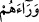
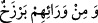

Kâdî der ki: “Âyette yeterli olmasa da bir miktar malı olan kimseye ‘miskin’
dendiğine delâlet vardır.” O, âyetteki lâm harfini temlîke hamletmiştir.
Mevlâna Sâ‘dî der ki: “Geminin onların mülkü olduğu sâbit olduğu zaman âyet buna
delil olur. Ancak bu görüşe katılmayan kimse: ‘Gemi onların elinde emanet yahut -
eserde vârid olduğu gibi- onlar işci oldukları için burada “lam” ihtisâsa delâlet
etmektedir.’ diyebilir.”
el-Kifâye müellifi el-Hidâye şerhinde bu iki görüşe de yer vermiştir. Eğer geminin
onların mülkü olduğu kabul edilirse; Allah’ın onları zâlim hükümdarın zulmünü def
etmekten âciz ve kötürüm oldukları için “fakirler” diye değil de, “miskinler” diye
isimlendirdiği söylenebilir. Çünkü, her hangi bir şey karşısında zayıf ve aciz kalan
kimseye de ‘miskin’ denir. Bu, kendilerine zekat verilmesi caiz olan “miskin” den
farklıdır. Meselenin tahkîki budur.
Allah’ın hükmü ve iradesi ile “Onu kusurlu kılmak istedim. (Çünkü) onların
arkasında,” ilerisinde “her” sağlam ve iyi “gemiyi” sâhiplerinden “gasbetmekte olan
bir kral vardı.” Endülüs’te Kurtuba şehrinde, ismi Celendî b. Kerkerd olan kâfir bir
kraldı.
“
Verâehüm (onların arkasında)” ifâdesi, tıpkı “
Ve min verâihim
berzahun (Onların gerisinde (önlerinde) bir berzah vardır.)” âyetinde de olduğu gibi
onların ilerisinde/önlerinde demektir. “Verâ (arka)” kelimesi, “femâ fevkahâ (onun da
ötesinde/aşağısında)” ifâdesinde olduğu gibi zıt anlamlarda kullanılan bir kelimedir.
İleride görüleceği üzere burada arka değil ön kastedilmiştir.
Ebü’l-Leys Semerkandî, “İnsanların işledikleri kötülükler sebebiyle denizde ve
karada fesad ortaya çıktı...” (er-Rûm, 30/41) âyetinin tefsîrinde, denizde işlenen ilk
fesad ve zulmün bu kralın zulmü olduğu, karada işlenen ilk fesad ve zulmün ise Kâbil’in
Hâbil’i öldürmesi olduğunu zikreder.
Gasb, bir şeyi zulümle ve zorla almaktır. Gasb edilme korkusu, Hızır (a.s.)’ın gemiyi
kusurlu yapmak istemesinin sebebidir. Daha önce Mûsâ (a.s.) itiraz edip “Halkını
boğmak için mi onu deldin?” deyince, Hızır (a.s.) ehlini boğmak için değil, gemiyi
kusurlu yapmak için olduğunu söyleyerek onun reddini ortadan kaldırmış ve önemine
binâen bu sözünü sonraya bırakmıştır.
Rivâyet edilmiştir ki Hızır (a.s.) gemidekilerden özür diledi ve gâsıb kralın durumunu
onlara haber verdi. Onlar bunu bilmiyordu.
Kısasu’l-enbiyâ’da der ki: “Onlar bu halde iken içinde kralın askerlerinin bulunduğu
bir gemi onları karşıladı. ‘Eğer kusuru yoksa kral sizin geminizi almak istiyor.’ dediler.
Sonra gemiye çıkıp araştırdılar. Nihâyet sökülen tahtanın yerini açık buldular ve dönüp
gittiler. Onlar uzaklaşınca Hızır (a.s.) tahtayı alıp yerine koydu.”
Mesnevî’de der ki:
Hızır, denizde gemiyi deldiyse de
Onun bu delişinde yüzlerce sağlamlık var.